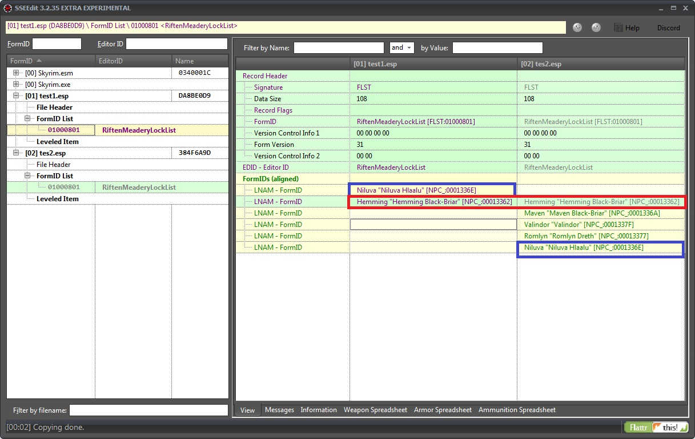
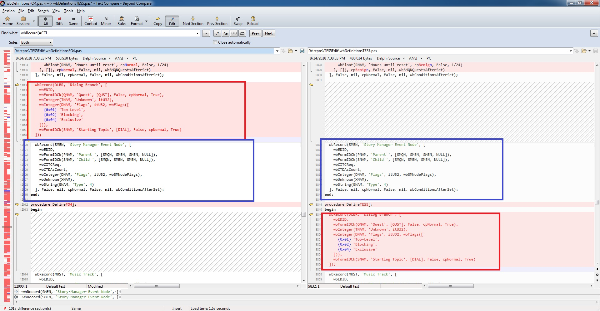
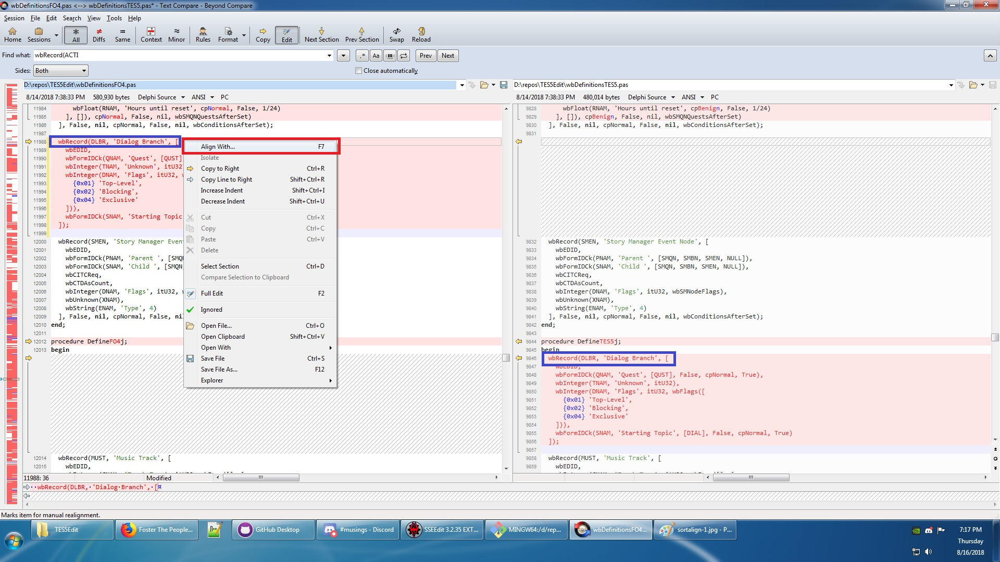
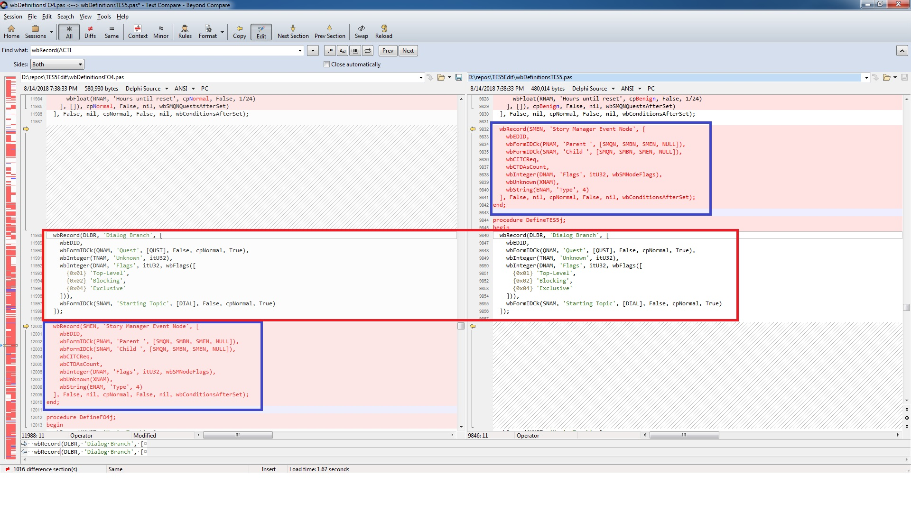
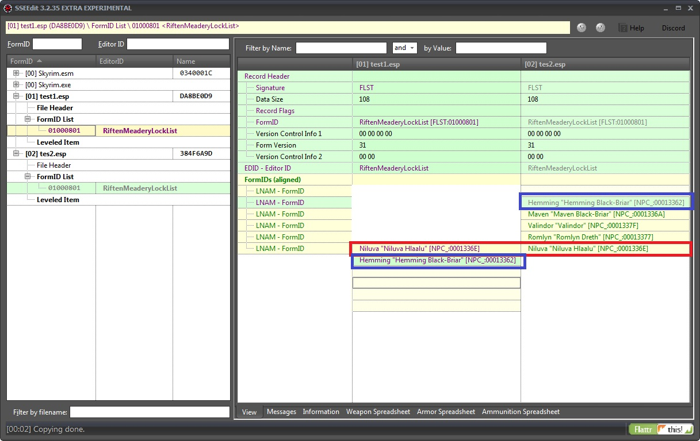
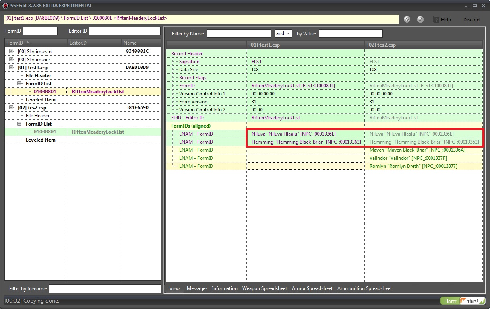
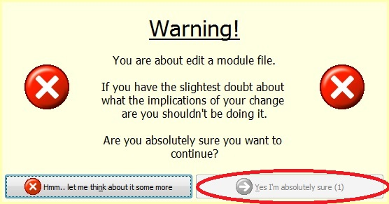
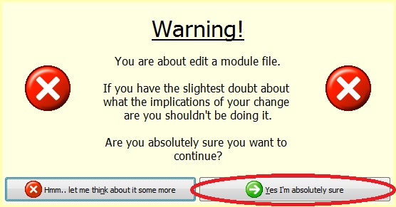
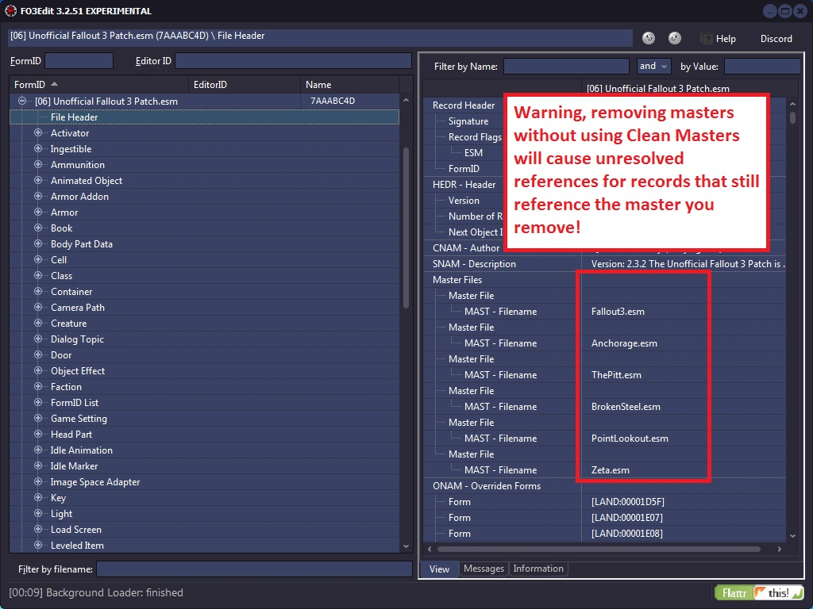

9.1 Sorting is not Alignment (SINA)

Question: Why aren't the rows lining up? "NIluva [Niluva Hlaalu]" [NPC_:0001336E] are the same and, they are in both lists, aren't they?
Answer: Sorting is not Alignment (SINA) and to understand that I will show some examples with both xEdit and Beyond Compare a Diff program comparing xEdit source.

The above example shows the same type of issue. The block of code starting with "wbRecords(DLBR, 'Dialog Branch'..." exists on both sides. The text is not aligned because the text is out of range of the alignment algorithm. The block of text "wbRecords(SMEM, 'Story Manager Event Node'..." interferes with the alignment.

One of the differences with Diff programs is that you can force alignment of code. As shown in the screen shot if I choose "Align With" I can specify where the focus of the alignment should start.

Once that happens now "wbRecords(DLBR, 'Dialog Branch'..." is aligned on both sides but since Diff programs do not alter the text in the file prior to aligning it now "wbRecords(SMEM, , 'Story Manager Event Node'..." is no longer aligned.

To illustrate that I used Paint to cut and paste the information in the first column to align with the common element in the second column. This is identical to the "Align With" feature in the Diff Program. However, there is no such function to change the focus of the alignment. Even if you could the rest of the information that is not common on both sides is shifted up.

The only way to have all the common information aligned is to alter the order of the information which is sorting. You are no longer aligning common information within range you are sorting the information so it will align. That is not what alignment is, Diff programs have no such sort first functionality, and neither does xEdit. Sorting is not Alignment or SINA and to desire both sorting and alignment, you should repent your sins.
9.2 ESL vs ESM
Note: Discussing the behavior of ESL vs ESM files only applies to Fallout 4 and Skyrim SE.
ESL flag controls how FormIDs are mapped, it has nothing to do with load order.
- without ESL Flag: mapped into a full slot (xx yyyyyy)
- with ESL Flag: into a light slot (FE xxx yyy)
General ESM and ESL behaviour:
- ESM flag affects load order (all ESM load before non-ESM) and other behaviours
- Files with the .esm and .esl extension, on load, will have the ESM flag force set in memory even if it's not set on disk. You can't make ESM or ESL files behave as non-ESM (ESP) files.
- After a file is loaded by the engine, the extension doesn't matter anymore. All that counts is the value of the ESM and ESL flag in memory. Possibly overridden by the game engine on load based on extension.
General ESP behaviour:
- An ESP file with ESM flag should behave like an ESM file
- An ESP file with ESL and ESM flags should behave like an ESL file
- An ESP file with only the ESL flag does map it's FormIDs to FE xxx, but it will not behave like a ESM
Load order as follows:
- Game's Master
- Update.esm [Skyrim SE]
- DLCs in official order
- CCs in official order
- All ESM (flag after load) in plugins.txt order
- All non-ESM (flag after load) in plugins.txt order
- Inside the "ESM block" you can have .esl, .esm, and .esp files mixed in any order based on plugins.txt, as long as they all have the ESM flag (implicit or explicit)
- Inside the "non-ESM block" you can have only .esp (because it's impossible to have a .esm or .esl without ESM flag)
One last exception to this, it's possible for non-ESM to load in the ESM block, if a ESM flagged file has the non-ESM listed as master. any module that is being loaded will force all it's listed masters to load before it.
9.3 Advanced Editing
9.3.1 I Know What I'm Doing
Beginners will be presented with the Warning screen when choosing to make changes to a module.

Pressing, "Yes" when prompted will allow you to make changes.

However, adding the command line parameter -IKnowWhatImDoing will disable that prompt.
9.3.2 Editing the Module's Header

Unless you are an advanced user and know what you are doing you should not alter the module's header. One example is removing masters from the module's header. Removing masters without using Clean Master will cause unresolved references for any records that still reference the master. You should always remove masters using Clean Masters. However, if you need to make an alteration and know exactly what you are doing then adding the command line parameter -AllowMasterFilesEdit along with -IKnowWhatImDoing will enable you to edit the module's header.
9.4 Testimonials
JustinOther:
Or something... For whatever it's worth, I'm really glad you've published your programs and, personally, find them more useful in a lot of cases than even the TES4 CS/GECK. Your editors lend a bird's eye perspective which is otherwise unavailable and no <oxymoron>serious gamer</oxymoron> running or creating mods for FO3/TES4 should be without them. Had Bethesda used your tool to "check for errors" and "undelete and disable refs" before releasing The Pitt, it would have had fewer or no problems. I hope you never stop publishing your editors. <3 xEdit smile.gif
brenner:
Thanks Elminster, this has saved me much frustration. I had been sorting through and manually changing small groups of mods to esm before this and this is so much easier and after a somewhat brief testing - far more reliable.
Airway:
The skin issue should be corrected. Tarrant's FO3Phalanx mod NPC companion Deisha had the right skin color when I used it. I've been testing the earlier versions since yesterday and encountered a few hiccups, but ElminsterAU's been quick and helpful in resolving them. It's been going smoothly since then.
Deaderinred:
the masterupdater is fantastic, i may be wrong however but i think its somehow caused enclave radio to come back on air during broken steel, but it only ever airs the pre-finale loop.
HeyYou Feedback:
I am running 1.4 version of the game, with FOSE. Also have the pitt, and O:A installed. Game runs perfectly stable, no crashes in several hours of play, no other problems that i noticed either, by all appearances, the list merger is working as advertised, i have encountered raiders, supermutants, and even Enclave with weapons from a couple different installed mods. So far, I have experienced nothing but happy playing, with all of my mods cooperating.
Thank You very much.
Red Lotus:
This mod is amazing. Before, when I embarrassingly did not know how to use it, it was crashing like crazy. When I figured out to rename it to what you said, I just had to disable two mods--one that allowed me to go over level 100, and another that calculated classic carrying weight in Fallout 1 and 2, so basically these two altered leveling and stuff. After I disabled them, it worked, then it only crashed when the CPU overloaded with enemies on-screen when I was doing Take it Back! (I use Marts Mutant Mod increased increased spawns), so too many Enclave Troopers.
Anyway, thank you for this amazing, amazing mod. The entire weekend, I was trying to figure out how to get the damned Fake Patch to work, and it never did. When you were taking Testers, I wanted to join but was a bit skeptic. When people said it was good, I wanted to try it, but then you released it when I was going to ask. When I got it to work, I immediately got the Hellfire Armor, an incinerator, loads of ammo, and more because of a MMM increased increased spawn vertibird encounter. Its been so stable. You are truly a savior!
Garner:
Hi Elminster,
I just wanted to say thank you for this. You're a credit to the community!
Martigen:
I'll take this opportunity to say that most of the mods on this board couldn't have been done as quickly as they are without xEdit, and even some mod features would be impossible to do without it. MMM fits into this category.
So thankyou, Elminster :)
mentalstampede:
This new update is like an answer to a prayer. The Disappearing navmeshes and statics was driving me nuts. Works great for me.
Mythranter:
Just wanted to say thank you for this great tool. It brought my modded 1.5 game back from the dead. Thanks!
Lasirith:
I'm officially recommending your Master Update program in my FAQ. If you could quickly check the blurb in my faq to make sure I didn't leave anything out about using the program I'd appreciate it. Thanks for the great work Elminster.
MadCon5:
After getting everything set up correctly (as far as I know tongue.gif) My Fallout 3 1.5, Unofficial FO3 Patch, FOOK+MMM has been as stable as it possibly can be. Haven't had a CTD for a day now, played it lot to during.
I just want to send out my grateful thanks to ElminsterAU for his xEdit/MasterUpdate!
And to all the people that sent feedback etc.
Thank you ever so much!
Unclellama:
Just wanted to say thanks for this. Using the MasterUpdate function has solved crash-on-save problems for me, now the game works perfectly... and now that it's 'fixed' I can actually enjoy the fact that patch 1.5 seems to run faster then unpatched. Woohoo!
Mavkiel:
You sir are a god. I love being able to use my old mods while using the 1.5 patch.
Roober804:
Thanks for the tools, FO3 has been more stable for me than it has been in a LONG time, I am able to use the 1.5 patch and all the mods i use to use before the patch without any CTD biggrin.gif
Grimstad:
I just wanted to say thanks.
Master Update allows my mod to work with 1.5.
Thats a lot of work to get shot down by a patch.
Chadwick:
I must say thank you for the FO3MasterUpdate. It fixed all of the problems I was having with the CTDs when I used mods that conflicted with the 1.5 patch. xEdit is undoubtedly a godsend. So again, thank you very much.
I hope this is the right place to post praise. :)
Delta1551:
Thank you for this very easy to use program! Editing FOOK with this is very easy, and fast.
Recall:
I would just like to say thank you ElminsterAU, as you have saved my Fallout 3. smile.gif
Creston:
Hey Elminster,
No problems here, just wanted to say thanks for the amazing work you've done on this tool. Thanks! biggrin.gif
crimson.cosmos:
Hey!
First, I'd like to thank you for writing this tool and maintaining it to such standards. It really is a life saver!
Miaximus:
Great work Elminster! Again I very much appreciate all the work you have done on this! I just tested with my configuration and it worked very smoothly as before, I'll be testing today. I also like the MasterRestore mode! Makes it alot easier when going back and forth between GECK and Fo3 for troubleshooting issues.
Thanks again!!
M